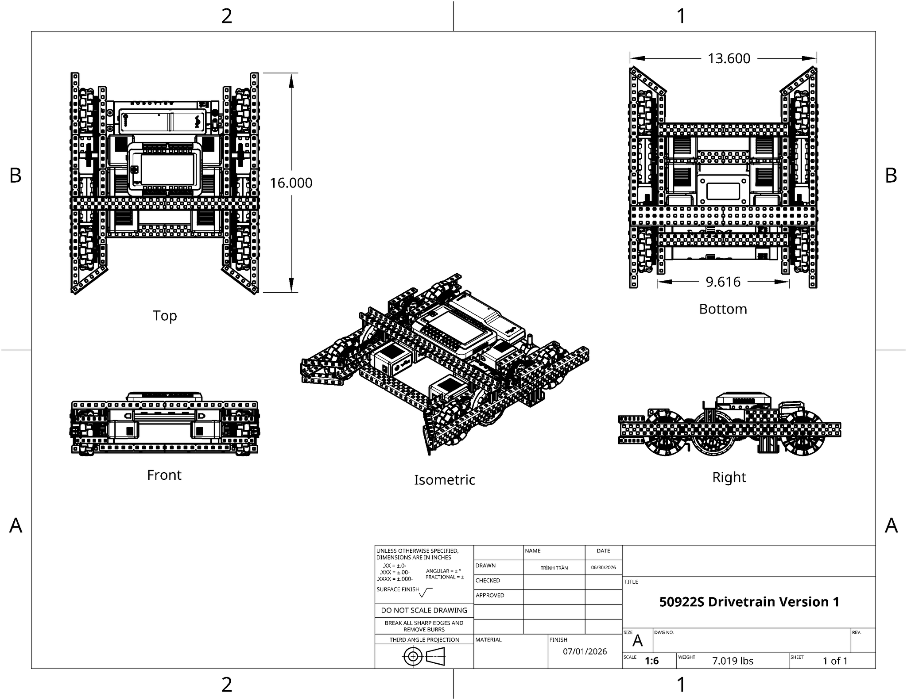
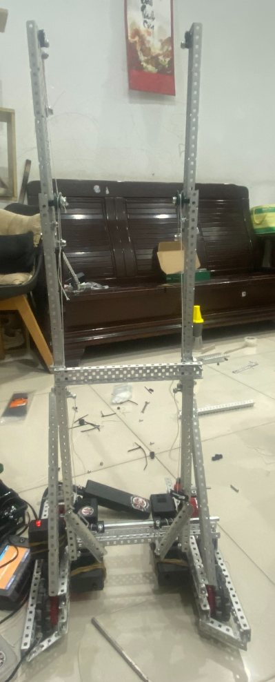
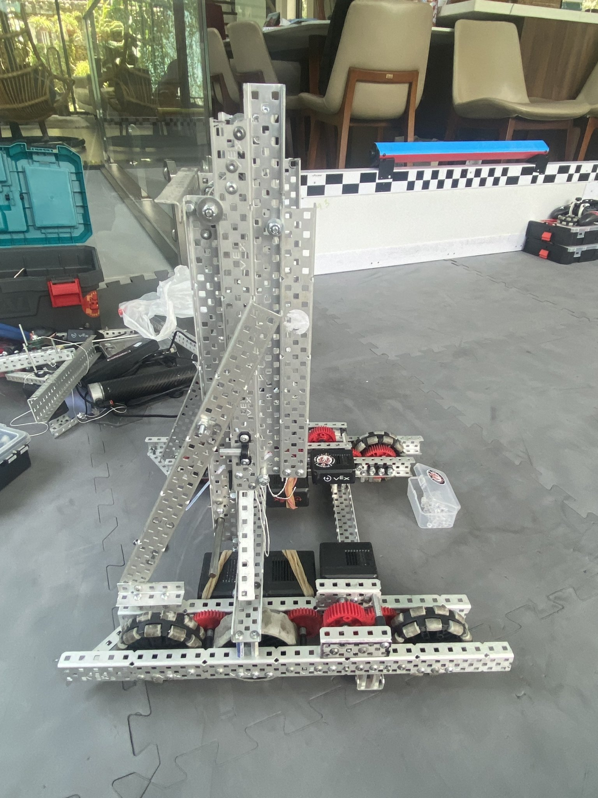
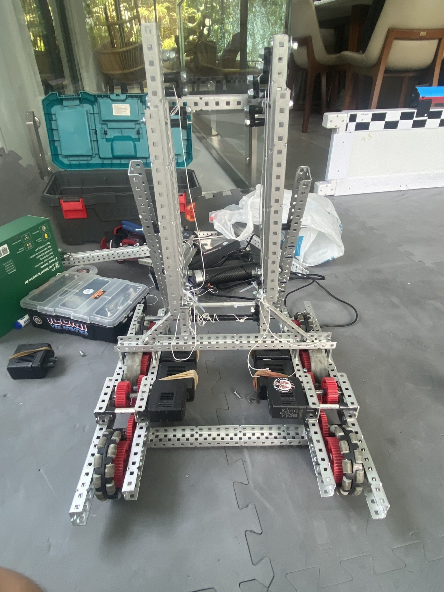
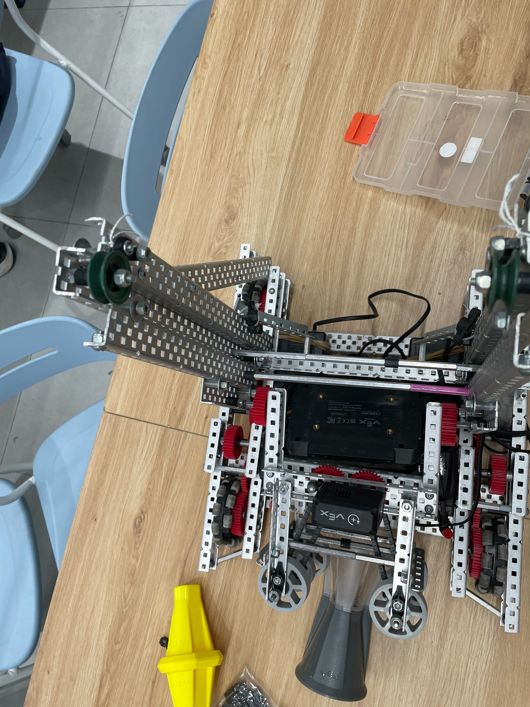
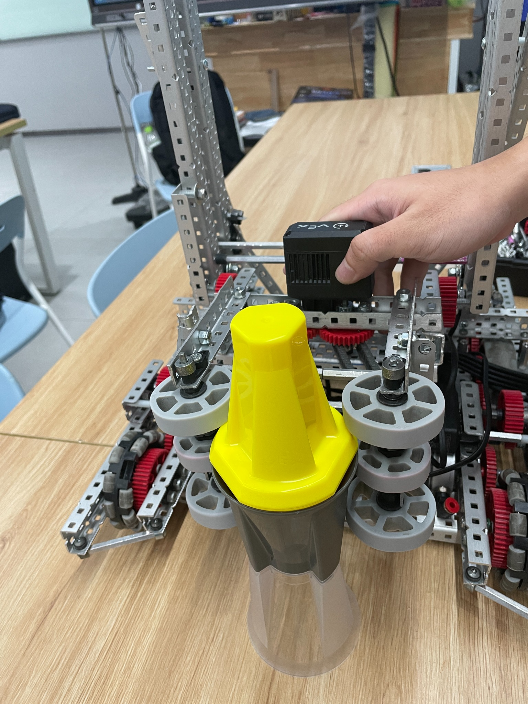

See the whole robot first.
Before splitting into roles, members learn what every subsystem is trying to achieve and how one design choice affects another.
By Grade 12, I had learned how quickly a robotics team can lose experience: one graduating builder, one programmer, one driver, and suddenly years of knowledge disappear with them. So our third season began with a different engineering problem — how do we make the team itself repeatable?

Previous seasons taught me how to rebuild robots after matches. This season forced me to think about a harder kind of rebuild: what happens when the people with the most experience graduate?
A strong robot can still belong to a fragile team.
If only one member understands the drivetrain, one person knows the codebase, and one senior remembers why a mechanism changed, the system works only while those people are present.
So instead of treating recruitment as “finding extra hands,” we opened the season to students from Grades 9 through 12. The goal was not simply to fill roles for one tournament. It was to give younger members enough time to watch, build, fail, ask questions, and eventually become the people who can teach the next group.

New members only become future team leaders if they are allowed to own real engineering decisions while experienced members are still there to guide them.
Before splitting into roles, members learn what every subsystem is trying to achieve and how one design choice affects another.
Fasteners, shafts, gears, spacing, wheel alignment, motors, and wiring stop being abstract once a student has to assemble them correctly.
A mechanism is not “understood” if a student can only copy it. They need to explain the trade-off, failure mode, and reason for the current version.
The handoff is complete when a younger member can decide what to test next without waiting for a senior to prescribe every step.


This season, I wanted our build process to produce more than a robot. It had to produce enough information for another member to reproduce, inspect, and improve the robot later.
The BOM became a planning tool: parts, quantities, dependencies, missing stock, and replacement needs could be checked before assembly. It reduced the old pattern of discovering halfway through a build that a critical component was unavailable.
Dimensions, clearances, orientation, and subsystem boundaries should not depend on memory. A technical drawing forces us to make assumptions explicit — and gives younger builders a language for checking whether reality still matches the design.
Every subsystem gave us a different kind of lesson: structure, power transmission, intake geometry, compression, serviceability, and how quickly a “small” change can propagate through the rest of the machine.


That is the strange part of building for continuity. If we do it well, some of the results will appear after the current seniors are gone.
A Grade 9 member who learns how to read a blueprint now may become the person who teaches CAD later. A Grade 10 builder who learns to maintain a BOM may prevent an entire future rebuild from stalling. A Grade 11 programmer who understands the robot’s history may make a better architecture decision next season because they know what failed before.
I used to think leadership meant being the person with the answer. This season, I am trying to build something more durable: a team that remembers, teaches, and improves without needing the same people forever.
“The final robot is temporary. The engineering culture we leave behind is the part that can keep competing.”